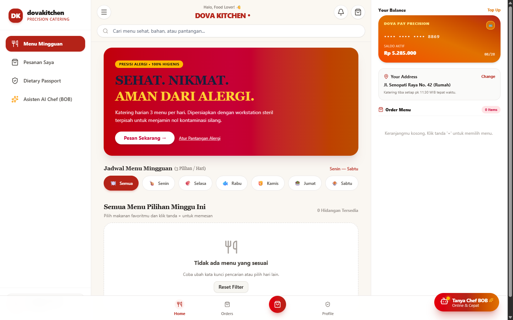
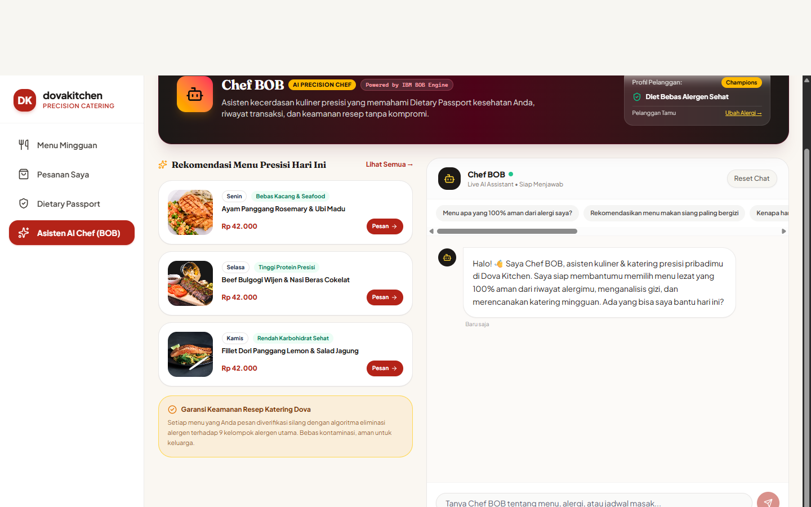
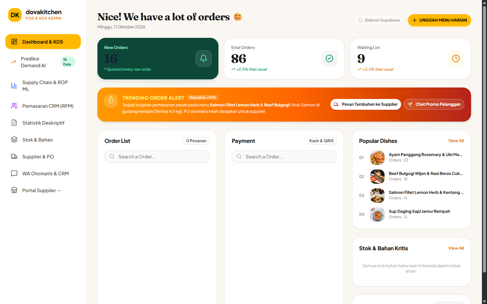
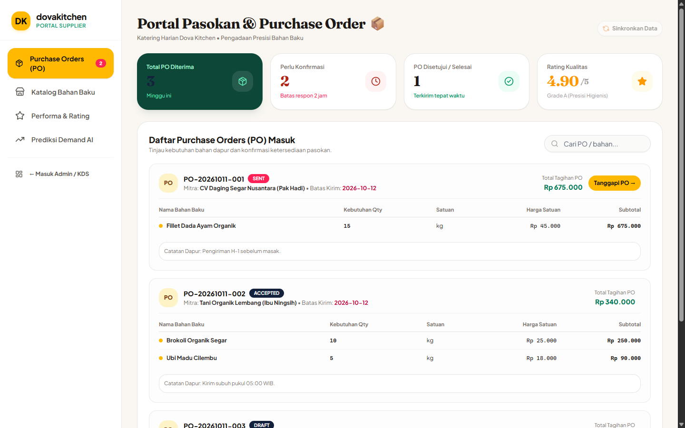

Platform katering harian presisi pertama di Indonesia yang mengintegrasikan Dietary Passport Nol-Alergen, AI Chef BOB (IBM watsonx Engine), dan Supply Chain Machine Learning Autopilot dari 1.000 data transaksi riil.
Dataset Riil
1.000 Transaksi
Analisis Supermarket & Dapur
Genom Alergen
9 Alergen Resmi
Nol Kontaminasi Silang
Orchestrator AI
IBM Langflow + Bob
watsonx Core Reasoning
Supply Chain ML
Safety Stock & ROP
Trigger PO WhatsApp Otomatis
Katering konvensional dan platform pesan antar saat ini tidak dibangun untuk keselamatan medis dan efisiensi rantai pasok. Pelanggan diet klinis bertaruh nyawa pada menu acak, sementara dapur berdarah-darah karena pemborosan bahan baku.
⚠️ 82% Katering Gagal Mencegah Kontaminasi Silang
Peralatan masak bercampur, resep tanpa katalog BOM gramasi, dan pelabelan manual menyebabkan reaksi anafilaksis dan alergi berat pada konsumen.
Pelanggan dengan riwayat alergi kacang, gluten, seafood, atau hipertensi harus menebak-nebak bahan makanan karena katering tidak memiliki transparansi gramasi dan workstation terpisah.
Chatbot katering umum sering berhalusinasi menyatakan makanan "aman" padahal saus mengandung jejak kacang/alergen tersembunyi. Tidak ada batas pengaman deterministik (deterministic guardrail).
Dapur membeli bahan baku berdasarkan intuisi manual. Akibatnya: bahan menipis di tengah proses masak (*stockout*), atau sebaliknya membusuk di gudang karena *over-purchasing* hingga 35%.
Pelanggan memesan di WhatsApp/Web, dapur mencatat di kertas robek, dan pesanan ke supplier lewat telepon acak. Tidak ada satu kebenaran data (*single source of truth*).
DovaGenome menghubungkan 4 peran vital (Pelanggan, Dapur KDS, Manajemen POS, dan Rekan Supplier) dalam satu otak kecerdasan komputasi pangan terpadu.
Pelanggan memiliki paspor genomik diet digital yang mencatat 9 kelompok alergen, pantangan medis, dan preferensi gizi. Eliminasi alergen dieksekusi secara deterministik (nol halusinasi).
Asisten AI pribadi yang mengombinasikan orkestrasi IBM Langflow dan IBM Bob Engine. Mampu merekomendasikan resep aman, konsultasi gizi, dan deteksi alergen instan.
Sistem tiket dapur steril (Kitchen Display System). Tiket masak baru terbit saat pembayaran diverifikasi, dengan label alergen besar dan checklist stasiun masak terisolasi.
Peramalan demand pesanan mengonversi resep ke gramasi bahan baku (BOM explosion). Menghitung Safety Stock & ROP, lalu mengirim Purchase Order otomatis ke WhatsApp supplier.
DovaGenome dibangun di atas dataset transaksi katering dan supermarket sesungguhnya. Kami menerapkan statistik deskriptif tingkat lanjut dan deteksi anomali data (outlier IQR) sesuai metodologi data science standar industri.
Data transaksi pemesanan lengkap dengan timestamp, nilai moneter (Rp 42.000 - Rp 148.000), rating, dan komposisi menu harian.
Pelanggan riil dikelompokkan ke dalam 6 klaster: Champions (35%), Loyal Customers (28%), dan At Risk (18% - aktivasi promo 20%).
Analisis deret waktu membuktikan hari Jumat dan Rabu merupakan titik puncak pemesanan (*peak days*), memicu prep-work otomatis di Kamis malam.
Ayam Panggang Rosemary & Ubi Madu menduduki peringkat terlaris No. 1 karena sifatnya yang bebas gluten, seafood, dan kacang tanah.
Keduanya tidak berdiri sendiri, melainkan terintegrasi dalam alur siklus tertutup:
User Input → Context Ingestion → IBM Langflow Pipeline → IBM Bob Reasoning → Deterministic Guardrails → Structured Output → 1-Click Action.
Langflow bertindak sebagai arsitektur orkestrasi visual yang menerima payload percakapan dari Web dan Telegram, lalu menyusun konteks dinamis sebelum dikirim ke model bahasa.
IBM Bob bertindak sebagai AI Agent Utama (Chef BOB) yang menjalankan penelusuran semantik cerdas, pemahaman bahasa alami (NLU), dan sintesis rekomendasi gizi presisi.
Dalam industri katering kesehatan, "hampir benar" sama dengan fatal. Oleh karena itu, DovaGenome tidak pernah menyerahkan keputusan keselamatan alergi kepada LLM.
LLM hanya bertugas memformulasi bahasa yang ramah dan persuasif. Evaluasi keselamatan dihitung 100% deterministik di lapisan backend lewat matriks eliminasi biner (Binary Safety Matrix).
PostgreSQL (Supabase) ➔ Menarik live data dari 4 tabel:
• dietary_passports (Profil Alergi Pelanggan)
• menu_ingredients (Daftar Bahan & BOM)
• inventory_stocks (Stok Gudang Realtime)
• order_history (1.000 Transaksi & Preferensi)
Setiap bahan baku dipetakan ke 9 kelompok alergen resmi (kacang tanah, gandum/gluten, susu sapi, telur, seafood krustasea, ikan sirip, kedelai, kacang pohon, dan wijen).
Jika menu mengandung bahan yang bersinggungan dengan pantangan paspor pengguna, menu secara instan diblokir (*hard exclusion*) dan disematkan lencana peringatan merah tebal.
Sistem KDS dapur membagi papan tiket berdasarkan kode workstation. Menu bebas alergen disiapkan di meja terisolasi dengan talenan dan pisau berwarna khusus.
Rekomendasi dihitung dari bobot: Score = Safety × [0.35(Likes) + 0.30(Cart History) + 0.20(Past Orders) + 0.15(RFM Weight)].
DovaGenome mengeliminasi pencatatan manual pengadaan bahan baku dapur lewat pemodelan matematika presisi (BOM Explosion, Moving Average Forecasting, Safety Stock, & Reorder Point).
$\hat{Y}_{t} = \alpha + \beta \cdot t$
Rata-rata Konsumsi Harian: 8.2 porsi/hari
Volatilitas Permintaan (σd): 2.04
Memprediksi lonjakan porsi per hari layanan sehingga dapur mengetahui kuantitas masak 7 hari sebelum pelaksanaan.
$SS = Z \times \sigma_d \times \sqrt{L}$
Lead Time Supplier (L): 2 hari kerja
Buffer Fluktuasi Tak Terduga: 3.2 kg
Menghitung batas minimum bahan baku di chiller agar katering tidak pernah kehabisan daging ayam atau sayuran di jam sibuk.
$ROP = (d \times L) + SS$
Bila Stok Fisik Gudang < ROP: STATUS: BUTUH PO
Auto Trigger WA ke Supplier Terverifikasi
Sistem otomatis menyusun dokumen PO resmi dan membuka template WhatsApp langsung ke supplier dalam 1 klik.
DovaGenome dirancang menggunakan arsitektur modular modern (React 18, Vite, TypeScript Strict, Tailwind, dan shadcn/ui) dengan estetika premium Bitepoint.

CUSTOMER WEBKatalog makanan harian dengan foto beresolusi tinggi, filter alergen instan, dan checkout aman dengan QRIS.

AI CHEF BOBPercakapan interaktif pengenalan paspor alergi, rekomendasi porsi, dan tombol 1-click pesan ke keranjang.

ADMIN POS & KDSTiket dapur steril, verifikasi pembayaran lunas, analisis 1.000 data transaksi, dan kalkulasi ROP stok bahan.

SUPPLIER PORTALTinjau Purchase Order (PO) masuk, katalog harga bahan baku higienis, dan proyeksi kebutuhan 7 hari ke depan.
Penerapan kecerdasan buatan DovaGenome menghasilkan perbaikan nyata pada metrik keselamatan pangan, kecepatan operasional dapur, dan perputaran modal rantai pasok.
Insiden Kontaminasi Silang
Validasi biner sebelum pesanan masuk ke kitchen menjamin zero cross-contamination pada seluruh pelanggan diet klinis.
Dari 30 Menit Manual
AI Chef BOB memangkas waktu konsultasi diet dan pemilihan menu hingga 95% lebih cepat.
Penghematan Waktu Restock
Kalkulasi ROP otomatis dan dispatch PO ke WhatsApp mengurangi kerepotan staf kitchen dalam menghitung stok fisik.
Peningkatan Repeat Order
Model pemasaran CRM RFM secara otomatis mendeteksi segmen At Risk dan mere-engage dengan voucher 20%.
Memisahkan kemampuan penalaran bahasa alami (IBM Bob) dari keputusan hidup-mati keselamatan alergi yang dijamin 100% oleh kode deterministik backend.
Platform pertama yang menghubungkan input preferensi mulut pelanggan secara otomatis ke perhitungan gramasi BOM, Safety Stock, ROP, hingga PO supplier.
Satu database Supabase melayani Web POS modern sekaligus Telegram Bot & Mini App dengan progres pesanan yang tersinkronisasi realtime.
Penimbangan bahan otomatis dengan timbangan IoT terhubung ke KDS untuk mengukur gramasi masak presisi.
Sinkronisasi pembakaran kalori harian untuk menyesuaikan porsi karbohidrat dan protein katering secara dinamis.
Katering diet klinis bersertifikasi untuk pasien rawat jalan rumah sakit dan program makan siang sehat korporat.
Siap Untuk Implementasi Skala Nasional
1 Backend • 4 Portals • Zero Cross-Contamination